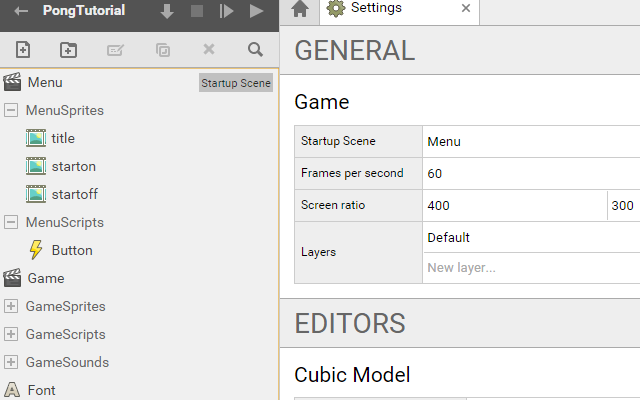
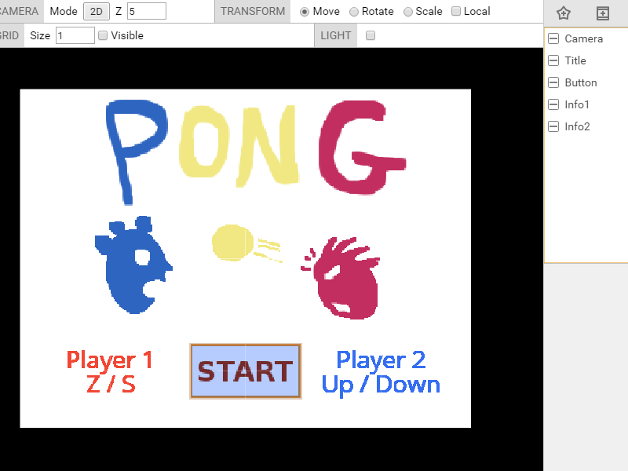

SUPERPOWERS TUTORIAL #1 SUPER PONG
Chapter 4: Polishing the game
Build the Menu Structure and load assets files
We are going to build a Menu, it is the place where the player comes when the game is launched for the first time. It is an opportunity for us to build a simple button in Superpowers and have a glimpse of Mouse control and interaction.
We start by adding assets to the structure of our program, we add one Scene that we name Menu, We add the sprites and load the image files for each. We also add a new script, button, than we will use for the code of our Menu.
- Menu (Startup Scene)
- MenuSprites
- title
- starton
- startoff
- MenuScripts
- button
In Settings, we change the start up screen from Game to Menu, this way the game will start with the Menu Scene we are building. We have now this structure :

When we load sprites assets we need to do a setup for each to give the grid size the same as the image size. It will also set the origin to the center, which will be important to positioning the sprites in the scene later.
Build the Menu Scene
We are going to combine assets together in a way to have this screen when we launch the game:

We start by creating an Actor Camera with a new component Camera. We also create two actors with the component sprite renderer, (Title, Button) and two actors with the component text renderer. (Info1 and Info2).
Here the properties for each actors :
- Camera, position (0, 0, 4), mode = Orthigraphic, Orthographic Scale = 3 (the camera should fit with the image title.png)
- Title, position(0, 0, 0), sprite = MenuSprites/title
- Button, position(0, -1, 2), sprite = MenuSprites/startoff
- Info1, position(-1.2, -1, 0), Text = Player 1 W / S, color = f14735 , size = 32
- Info2, position(1.2, -1, 0), Text = Player 2 Up / Down, color = 356ef1 , size = 32
We have now our menu with game instructions. We only need to have a functional button. We start programming it.
Scripting a Button
We now add the variables we will need for our script, the important part is the Math.Ray function that we need to locate the intersection between the mouse and the game screen.
// We initialize a global variable ray which is of type Math.Ray
var ray : Sup.Math.Ray;
class ButtonBehavior extends Sup.Behavior {
// flag to tell when the mouse hover the button
isHover : boolean = false;
awake() {
ray = new Sup.Math.Ray(this.actor.getPosition(), new Sup.Math.Vector3(0, 0, -1));
}
[...]
We next define a function mouse inside the class ButtonBehavior. We change the sprites of an actor by calling the method spriteRenderer.setSprite(spritepath) to this actor. We load the scene Game when the button is clicked with Sup.loadScene(SceneName).
/* We define different possible actions of the mouse,
click action load the game scene, hovering and unhovering
make the button to change the sprite.*/
mouse(action) {
if(action == "click"){
Sup.loadScene("Game");
}
else if(action == "hover"){
Sup.getActor("Button").spriteRenderer.setSprite("MenuSprites/starton");
}
else if(action == "unhover"){
Sup.getActor("Button").spriteRenderer.setSprite("MenuSprites/startoff");
}
}
And finally in the update loop, we build the logic of our button with checking conditions. We update our variable ray at each frame to have the position of the mouse in the screen. We check the intersection of the mouse and the button with the method intersectActor. For each condition, if the check is true, the function mouse(action) is called.
update() {
// Refresh position of the mouse in the camera
ray.setFromCamera(Sup.getActor("Camera").camera, Sup.Input.getMousePosition());
/* Condition to check if yes or no, the mouse hover
the button, and if yes, check if the mouse click.
We call the mouse function with the action related. */
if(ray.intersectActor(this.actor, false).length > 0){
if(!this.isHover){
this.mouse("hover");
this.isHover = true;
}
if(Sup.Input.wasMouseButtonJustPressed(0)){
this.mouse("click")
}
}
else if(this.isHover){
this.isHover = false;
this.mouse("unhover")
}
}
}
Sup.registerBehavior(ButtonBehavior);
Before starting the game, we need to attach our script by adding a new component behavior to the actor Button and choose the class ButtonBehavior.
We now have a menu and an almost finished game, we can now give sounds and a possibility to end the game.
Adding Sound
We have already loaded the sound assets, we are going to incorporate them inside our game.
But before returning to the Game scripts, we can add one sound to the menu when we click to start the game by simply writing one line of code with the method Audio.playsound.
[...]
if(action == "click"){
Sup.loadScene("Game");
Sup.Audio.playSound("GameSounds/toc");
}
[…]
We want a sound when the ball touches a side or the paddle, and we also want a sound when there is a goal. We then go in the Ball script and add Audio sounds in the conditions of update :
[…]
if(y > 2.85 || y < -2.85){
Sup.Audio.playSound("GameSounds/tac");
[…]
[…]
if(Sup.ArcadePhysics2D.collides(this.ball, Sup.ArcadePhysics2D.getAllBodies())){
Sup.Audio.playSound("GameSounds/toc");
[…]
[…]
if(x > 4 || x < -4){
Sup.Audio.playSound("GameSounds/tada");
[…]
The game now has sounds.
Adding an end to the game
To polish the game we could create a new scene victory which displays the player who won on the screen. We would need to load this scene when the number of point reach a maximum. But here, we will just return to the menu screen when one player get 10 points.
We need to add a condition at the end of the loop update.
[…]
if(this.score[0] == 10 || this.score[1] == 10){
Sup.loadScene("Menu");
}
[…]
The game is now complete.
Finally: Complete Game Source Reference